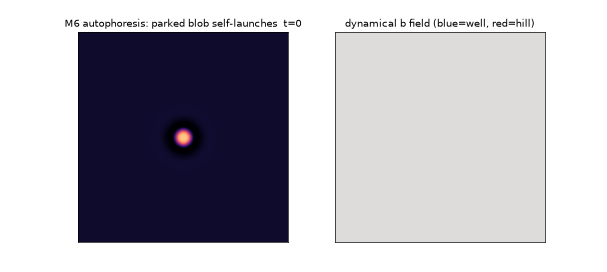
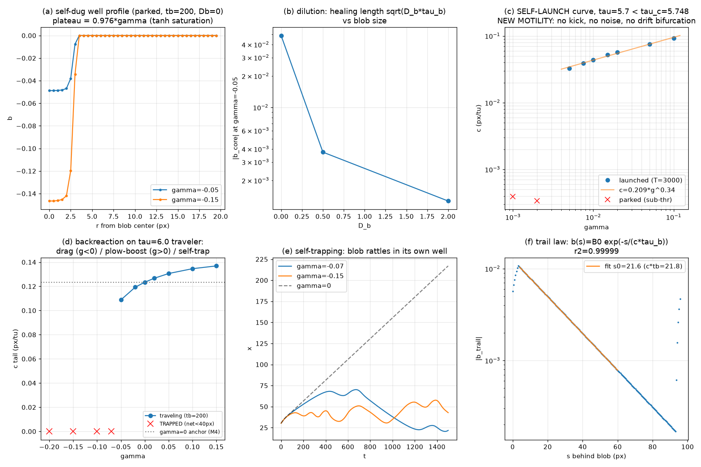
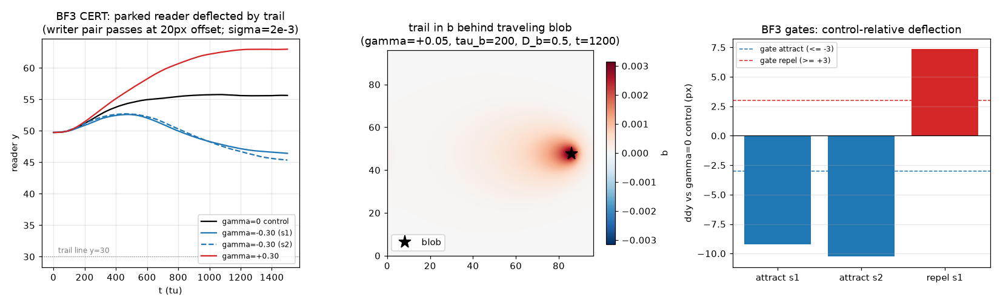
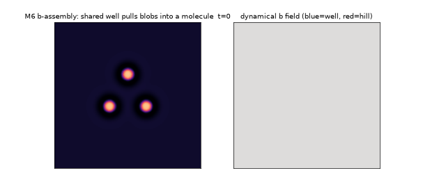
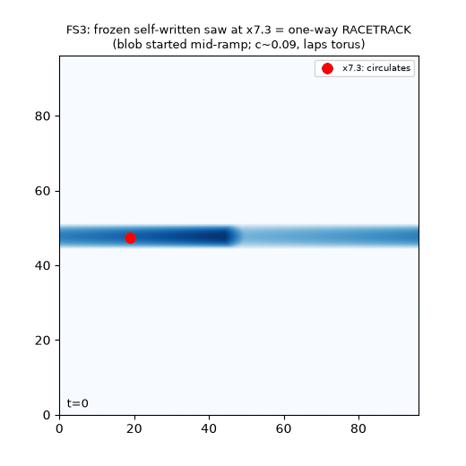
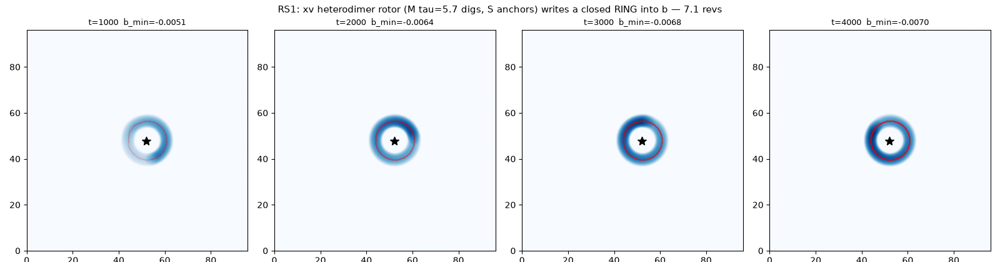
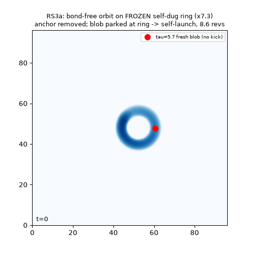
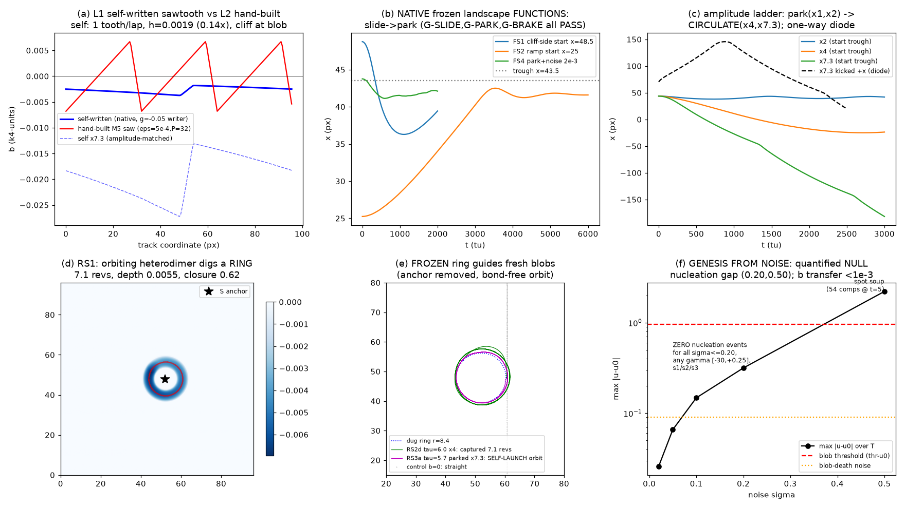
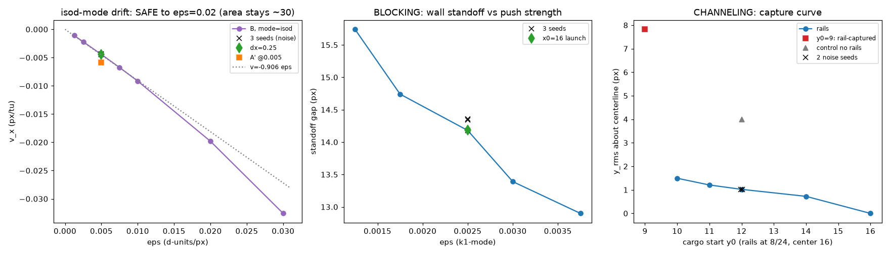

The living landscape: trails, self-launch, and self-written infrastructure
Post 5 — the dynamical background field: autophoresis, stigmergy, b-assembly, and the reduction map (which landscapes grow themselves).
The background becomes a field
The static-landscape machinery this generalizes is in post 6 (isok, sawtooth, rails); the trilinear-vertex reading of the coupling is derived there too.
Second campaign, 2026-02-19. Two parallel tracks, both audited on fresh
seeds like everything above. Probe dirs: probes/blobs/bfield/ (180 runs),
probes/blobs/rotor/ (108 runs).
Promoting b to a bona-fide field
Everything in section 6 treated the landscape b(x) as frozen scenery. M6 makes it the
fourth field of the theory, sourced by the blobs themselves and relaxing on its own
clock:
∂b/∂t = (γ·S(u) − b)/τ_b + D_b∇²b, S = tanh(max(u−thr,0)/0.4) (bounded deposit where a blob sits)
b still enters the u-equation only through the exact isok channel (−b·(w−u₀)), so the
vacuum stays an exact fixed point with the dynamics on (verified to 1e−16), and
γ=0 reproduces every M4/M5 anchor to 0.02%. Sign convention: γ<0 digs a well
under the blob (self-attraction), γ>0 raises a hill (self-repulsion). τ_b ≫ τ
makes b the slow field — geology to the blobs' weather. Three certified headlines:

Autophoresis — a new motility mechanism. This blob sits at
τ=5.7, below its drift threshold (5.748): without b it is provably parked forever.
With γ=+0.05 it builds a hill under itself; the hill's buildup lags the blob
(τ_b=200), so any infinitesimal displacement puts the peak slightly behind — and the blob
rolls off its own volcano, forever. Right panel: the red hill trailing the runaway blob.
Measured launch law c = 0.209·γ0.341 (r²=0.991); launch threshold γ* ∈
(0.002, 0.005] (noiseless); D_b suppresses (spreads the hill flat). Audit: fresh seed at
γ=0.05 hit the law to +0.3%. Chemotaxis-style self-propulsion, no motor anywhere. Mechanism class is
well-known across four literatures — camphor swimmers (Nagayama et al.
Physica D194:151, same pitchfork + √-law), autophoretic colloids
(Michelin et al. Phys. Fluids25:061701, critical-Péclet launch),
walking droplets with path memory (Couder & Fort Nature437:208 —
the closest single analog to our bond+memory package), and delayed-feedback soliton
drift (Gurevich & Friedrich PRL110:014101). New here: the exact-vacuum
embedding, c=0.209γ^0.341, and the trail-memory law.
With a traveling blob (τ=6.0) the deposit becomes a backreaction:
γ<0 drags (−12% speed at γ=−0.05 — the blob tows its own well, an effective mass),
γ>0 plows (+6%), and below γ≤−0.07 the blob self-traps — alive, rattling in a
well it can no longer leave. The trail it leaves behind obeys
b(s) = B₀·e−s/(c·τ_b) (verified to 0.002% — the field literally implements an
exponential memory of where the blob has been).
Stigmergy certified (interaction through the medium): a traveling writer passes
a parked reader 20 px away; with γ=−0.30 the reader is pulled 9–10 px toward the trail,
with γ=+0.30 pushed 7 px away; γ=0 control: nothing. Two blobs now interact through
three channels: w (contact repulsion), v (bonds, rotation — below), and b
(long-range, long-memory trails).

The measured b-field laws. Left: self-dug profile depth b_core=0.976γ (tanh saturation exact). Middle: the launch curve c=0.209γ^0.341 with the threshold γ*∈(0.002,0.005]. Right: backreaction on a traveling blob — drag (γ<0), plow-boost (γ>0), self-trapping below γ=−0.07.

Stigmergy certified. A writer passes a parked reader at 20px: attractive trails (γ=−0.30) pull the reader 9–10px, repulsive ones push it 7px; γ=0 control flat. Two blobs interacting through the medium's memory.

b-assembly — the field builds the molecule. Three blobs parked at
separation 24–26 px — well beyond the bond basin ([14.5, 19.5]), so ordinary
binding can never start. Each digs a halo-shaped well (γ=−0.5 on the w-footprint, D_b=2);
the wells overlap and merge (right panel) into one shared basin that reels the blobs in
until they lock onto the M4 bond shells [15.1, 15.1, 15.7] — a triangle molecule built by
the landscape. Audited on a fresh seed and different geometry: assembled by t≈310. In the
searcher's noiseless n=1 run the finished trimer then self-launched (c=0.076,
rigid V-formation) — the field assembled a machine that walked away. (Kept honest: that
last step is a single-run observation, geometry-sensitive under noise; certifying it is
open work.)
The teaser that motivates the inverse problem: a blob circulating one way around
the periodic domain writes a standing asymmetric sawtooth in b — sharp edge at the
blob, exponential ramp behind (lap-decay measured 0.49 vs 0.46 predicted from the trail
law). The hand-built M5 racetrack shape is apparently a natural fixed point of
asymmetric motion + relaxation. Honest negatives from the BF4 hunt: noiseless self-dug
channels certify, but noisy confinement fails (transverse sloshing is weakly pumped);
three repulsive-trail writers do NOT partition space (wake shell-locking wins — the trails
never get a vote); uniform-b stability windows do not transfer to local wells (locality is
protective: a blob survives b_core=−0.99 locally vs replication at −0.1 uniform).
Growing the landscape instead of drawing it
Phase 2 ended with a teaser: a circulating blob writes a sawtooth into the dynamical
b field. The genesis searcher asked the L2→L1 question systematically: for every
landscape feature the machines need, can the physics write it? The audited answer:
feature
growable?
how / fidelity
tooth (parking track)
yes
one-way circulation + relaxation;
functions at native amplitude (audit: fresh blob slid 16.9 px into the trough and froze)
ramp
yes
the exponential trail law
rail
yes — free
the groove's own transverse profile
self-rails (FWHM 5.5 px); the hand-built machine needed a separate rails term
ring
yes
an orbiting rotor writes a closed ring
(r=8.4, closure 0.62); deep rings must be dug slowly — greedy deposition
self-traps into C-arcs
dock/brake
yes
self-tooth trough = parking brake
racetrack conveyor
yes at 4× amplitude
shape-only label —
see the film below
blob from noise
no — theory-backed
vacuum-exact coupling
is quadratic in deviations: γ can never destabilize the vacuum. The nucleation
window (σ>0.2) lands directly in spot soup while blobs die at 0.09. This coupling
class cannot bootstrap blobs from nothing — a design theorem, not a failed run.

Writing the track by driving on it: a circulating blob leaves an
exponential trail that piles into a standing asymmetric sawtooth (lap-decay 0.49 vs 0.46
predicted from the trail law). The hand-built M5 racetrack shape is a natural fixed point
of asymmetric motion + relaxation.

Writing the ring. Phases of the self-dug racetrack: the orbiting heterodimer deposits per lap; the standing ring closes (closure 0.62 at γ=−0.05); greedy digging (γ=−0.30) self-traps into a C-arc — deep rings must be dug slowly.

The self-dug conveyor: a rotor writes a ring into b; freeze the
field, remove the rotor, park a fresh immobile blob (τ=5.7, provably stuck on flat
ground) anywhere on the ring — it self-launches into orbit (audit at a fresh angle:
5.7 revolutions, r=8.45). Infrastructure built by one object animates strangers.
Two design laws came out of the comparison with the hand-built landscape:
(1) self-written beats hand-built on efficiency — response per unit slope is
10–40× higher (near-onset response is sublinear in slope; our hand-drawn track wastes
slope), and the self-written groove rails for free; (2) amplitude selects function:
the same self-written shape is a parking track at native amplitude, mush at 2×, a
circulating conveyor at 4×, and a one-way diode at machine amplitude (kicked
against the tooth: reverses). The single exogenous step left in the whole L2→L1
reduction is the freeze (γ→0 limit) — everything else grows.

The reduction-map evidence panel — tooth/rail/ring/dock features, self-written vs hand-built, with the χ=response/slope comparison (self-written wins 10–40×).

The transport dial family (from the static-landscape era, for comparison): drift-speed curves v(ε) for the two coupling modes — the k1-ramp with its flip bifurcation, and the zero-footprint iso-line mode the machines use.